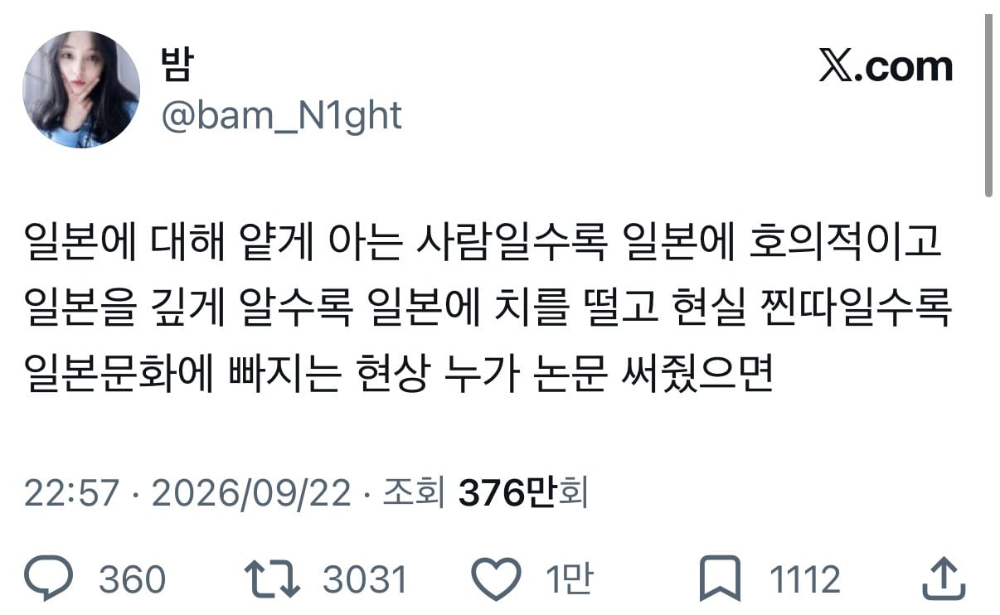
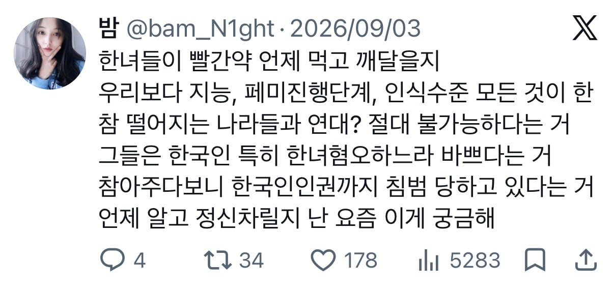
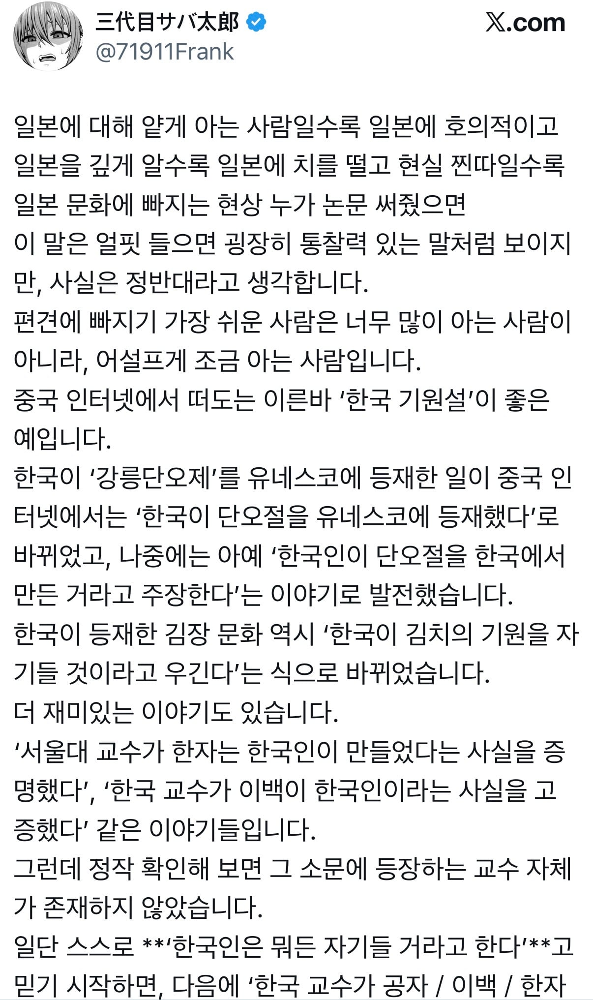
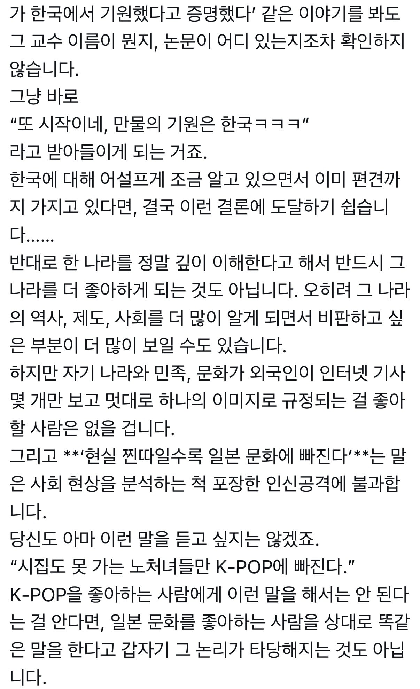
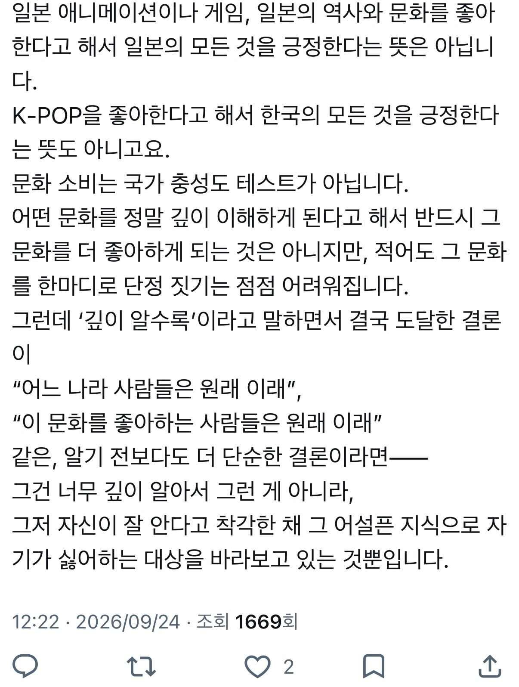

오호...?
어?

아항 ㅋㅋㅋㅋㅋㅋ
저 원트에 달린 안타까운 댓글



아조씨 쟤는 이런 걸 알아들을 지능이 아니에요 ㅋㅋㅋ

오호...?
어?

아항 ㅋㅋㅋㅋㅋㅋ
저 원트에 달린 안타까운 댓글



아조씨 쟤는 이런 걸 알아들을 지능이 아니에요 ㅋㅋㅋ
한국에서도 연봉줄이고 널널한곳 가면되지않을까...www
일본에 대해 알면 알수록 슬픈 사실은, 내가 좋아한 일본을 지탱하던 사람들은 헤이세이의 인간들이고, 레이와의 인간들은 스스로를 지킬 자본도 심적 여유도 없는 그냥 나와 같은 인간들이라는 것...
내가 아는 분이랑 비슷한 말 하네
일본스러운 것들을 유지하는건
쇼와 , 헤이세이 때의 사람들이라고
연호구분은 새 일왕이 즉위할때마다 바뀌는건가?
일왕 즉위를 기준으로 함.
쇼와 1926~1989
헤이세이 1989~2019
레이와 2019~ 현재
본문은 모르겠고 이댓글은 엄청 공간감
난 오히려 쇼와-헤이세이까지 봄
레이와와선 진짜 나라가 삐걱대는게 보임
도심 재개발 꼬라지보면 참 이런생각이 많이듬
ㅇㄱㄹㅇ
헤이세이 라이더들은
"그 어떤 고난이 있어도 인간을 구한다는 제1원칙을 지킨다"면서 구르는데
레이와 라이더들은
"내 상처를 이해해줘 인정받고 싶어" 징징징
쇼와 라이더 : "가면라이더 OOO 누구누구는 개조인간이다!"
아니 그야 레이와 시작한지 10년도 안 됐으니까 지금 일본문화 즐기는 사람들은 최소 헤이세이 때 일본을 접한 사람일 수밖에 없지
무식한 사람일수록 인터넷에서는 단정적으로 말하는게 웃김
한민족이 다른나라를 침략할 생각을 안해봤다? 국사책에 4군6진이랑 대마도 정벌 나오잖아... 의무교육을 안받았나 ㅋㅋ
구한말 고종이 나라 망해가는 와중에 만주 껄떡댄적도 있고
대마도 정벌이 침략 전쟁이었나?
평화민족이니 침략했니 안 했니 따지는게 참 어이가 없는게 국가라는 시스템 자체가 사실 고대부터 무력에 바탕을 두고 형성된 거잖음 ㅋㅋ
지금 동화되어 정체성이 사라진 것 뿐이지 한반도에 있던 사람들이 다 같은 민족이라고 느끼기나 했겠음? 문화도 지역마다 다 다르고 했을텐데 그거 다 전쟁하고 복속시켜서 합쳐진건데?
고구려, 신라, 백제만 봐도 교과서에 나오는 것처럼 처음부터 그 땅 가지고 있던거 아니잖음 그건 착한 침략인가?
대마도는 왜구들이 하도 깝치니까 본보기로 부순거고.
침략 전쟁이야기에 대마도꺼내는 너도 쟤랑 다를바없어보이는데?
어우 벽돌
어휴 반박을 2줄이상으로 쓰시면 어떡해요!
저 여자나 일본의 평화유전자나 다를게 없네 부끄러움은 보는 사람 몫
아조씨가 아니라 ai잖아
**넌 정말 핵심을 찔렀어**
닭장!
저런걸 이해할 능지였으면 애초에 원트윗을 쓰지도 않았겠지
난 일본 좋은데..
일본 여행 두번이나 갔다와본바
일본에선 대부분의 위스키가 한국보다 싸다는거임!
일본 좋습니다
외국 어디나 똑같을텐데
살다보면 그냥 아무 생각 안 듦
어쨌거나 한국에서 있는 것보다 낫다 생각해서 계속 외국에 있는 건 맞음
근데 저거와는 별개로 "일본은 달라"병은 왜 생기는 거냐?
저 프사만 아니었으면
단순 — · ** 창 결 통
이런거 검색해서 자주 튀어나오면 걍 AI글임
악기 좋아해서 오차노미즈 갈때마다 행복하긴 한데 살라고 하면 나는 성격이 급해서 좀 힘들것 같음
이새끼 지금 만주를 호령하던 고구려를 부정하는거냐
일본에서 잘살아갈 사람이면 한국에서도 잘살고
한국에서 도망친놈이면 일본에서도 도망치지 않을까
한중일수준에서는 다들 비슷비슷한듯
그렇기도 하고 아니기도 한데 30살 넘어서도 일본 만화 파고 있는 사람은 동양인 백인 안가리고 찐오타쿠임
설명은 진짜 잘하셨는데 하필 벽에다가 대고 설명을 해버리셨네...
프사는 왜 저거야 ㅋㅋㅋ
닭장 ㅋㅋㅋㅋㅋ
여자들은 일본가서 오히려 애국심 강해지고 일본 혐오 걸리는 경우가 꽤 있고 남자는 만족하는 경우가 많은듯
개드립에서 자주 보이는 여자, 중국, 일본, 종교, 힙합, 일부 연예인, 스트리머 등에 대한 시각이랑 똑같네. 자기가 잘 안다고 착각하고 싫어하는 감정으로만 보는 것..
사람 사는데 다 비슷할텐데 ㅋㅋ
프사는 왜 김보라로 해놨대ㅋㅋㅋㅋㅋㅋ
상황은 개별적이고 현실은 훨씬 더 복잡함
아닌데? 나는 여러 이유가 있고 심사숙고해서 선택한거지만 다른 애들은 그냥 나쁜건데?
내 친구 일본으로 연봉도 줄이고 일하고 살길래
왜 연봉줄이고 사냐니까
한국에 있을때는 내 삶이 없었다라고 하더라
국가마다 장단점이 있고, 각자 맞는 사람들이 살면 된다고봄